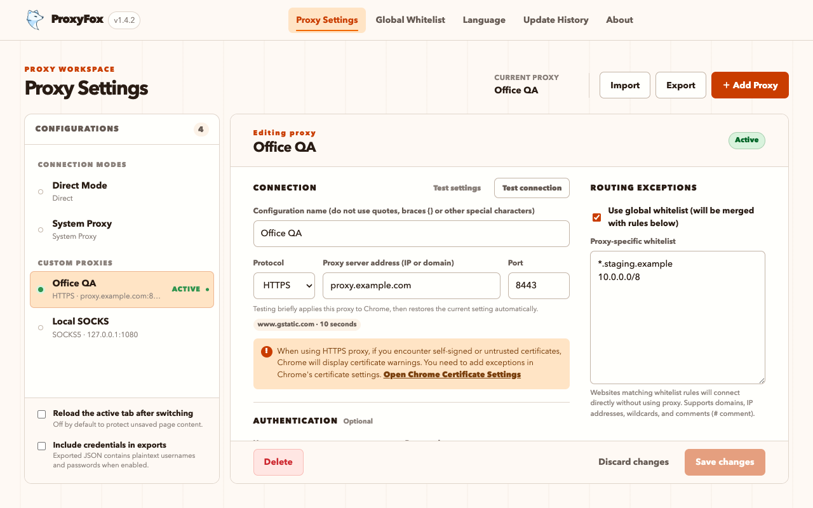

Choose a trusted profile
Switch between Direct, System, and your own HTTP, HTTPS, or SOCKS profiles.
Open source · Local first · Manifest V3
ProxyFox helps developers, testers, and enterprise network users switch proxy profiles they already trust. Authentication challenges are matched strictly, failed changes roll back, and settings stay local.
HTTPS · proxy.example · 8443A predictable switch
ProxyFox treats a proxy change as a complete transaction, not a click followed by an ambiguous status light.
Switch between Direct, System, and your own HTTP, HTTPS, or SOCKS profiles.
Credentials are supplied only when the proxy host and port match the active profile.
Chrome settings and extension state move together, preventing a misleading UI state.
Failed saves, switches, deletes, and imports restore the previous settings.
The actual product
The popup handles quick switching. The settings workspace brings profiles, bypass rules, connection tests, and import/export together—without an account or remote dashboard.

Built for controlled networks
Credentials remain in the current Chrome profile and are used only for a strictly matching proxy challenge.
Temporarily apply a candidate, report apply and network timing, then restore the previous setting.
Use domains, wildcards, IP addresses, CIDR, IPv6, and full-line or inline comments.
Credentials are removed by default and written as plaintext only after explicit opt-in.
Runs on Chrome 114+ with a service worker and no remotely hosted code.
English, Simplified Chinese, Traditional Chinese, Japanese, and Korean.
Clear product boundary
Clear boundaries reduce wrong installs and make network behavior easier to judge.
Practical guides
Understand Chrome proxy boundaries without assuming prior network expertise.
Understand Direct, System, and extension-controlled proxy modes and create a first profile.
Read the guide →Enter the host and port, handle authentication, and verify the profile with a connection test.
Read the guide →Maintain clear direct-routing rules with domains, wildcards, CIDR, and comments.
Read the guide →Compare manual switching, automatic rules, migration support, complexity, and fit.
View comparison →FAQ
The Chrome Web Store currently carries stable v1.4.1. The locally tested v1.4.2 candidate has not been submitted as a store update.
Download v1.4.2 candidate ZIP · 268,003 bytes · SHA-256 457d0271…55790bd